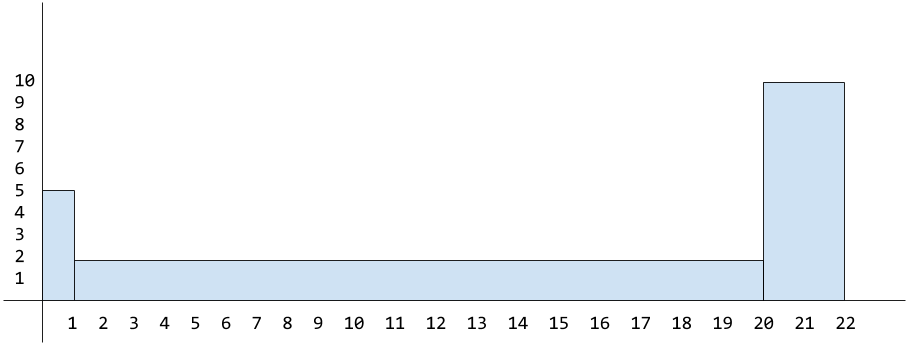
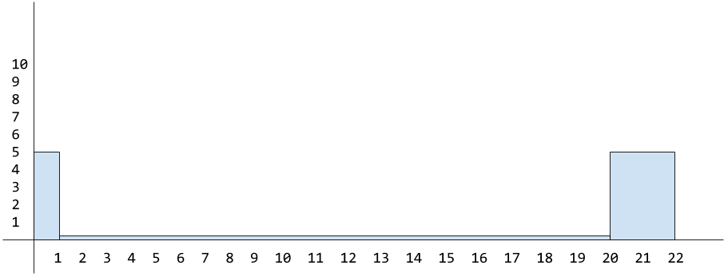

Statistics and Graphs: The Basics
- Introduction
- Information vs Data
- Frequency
- Watch out for misleading data
- Pie Chart
- Bar Chart
- Histograms
- Line Graphs
- Averages
- Which average to use?
- Ranges
- Percentiles
- Variance
- Conclusion
Introduction
I started learning about statistics because I found myself doing a lot of operational monitoring (i.e. making systems more observable, instrumenting individual services, and monitoring that data via custom built dashboards).
Although, for the most part, everything worked as expected and I generally understood the data I was seeing visualised, I wanted to be sure I wasn’t missing any important information (or worse, mis-representing the data).
This began my journey into learning about statistics (as a complete beginner). I picked up a book on the subject and started taking notes.
Note: I highly recommend reading Head First Statistics which is where the majority of this information has stemmed. There you’ll find a lot more detail and better break downs of the ideas.
This blog post is the result of what I have learnt so far, and its motivation is to explain some of the basic concepts behind utilising statistics to represent data. This post is aimed at beginners, as I myself am very much a beginner in this space.
So let’s begin by defining what ‘statistics’ means…
Statistics is a branch of mathematics dealing with the collection, analysis, interpretation, presentation, and organization of data – Wikipedia
OK, that seems reasonable enough. Statistics is an ‘umbrella’ term that encapsulates the complete pipeline of how data is acquired, analysed and visualised. So what is data and what does it look like? Let’s move onto the next section where we can begin to clarify and understand it a bit more…
Information vs Data
If you’re like me, you may well have confused the words “data” and “information” as being the same thing. But there are actually important differences that should be understood:
- Data: is the raw facts/figures.
- Information: data that has extra context/meaning applied.
For example, raw data might look like:
[3, 5, 7]
Where as information would be the taking of that raw data and giving it extra context. So, in this example, those three data points could represent the age of three children. In a classic CSV (comma separated values) format (which is used for storing ‘tabular’ data), it might be represented like so:
Age
3,
5,
7
Note: data is either “numerical” (dealing with numbers), “quantitative” (describing quantities) or “categorical” (data is split into categories that describe qualities or characteristics - also referred to as “qualitative”).
Frequency
When dealing with statistical data, the first thing you typically learn about is data “frequency”. Let’s start with a definition…
In statistics the frequency (or absolute frequency) of an event is the number of times the event occurred in an experiment or study. – Wikipedia
Consider the following data:
3,5,5,5,7,7,2
The first number 3 and the last number 2 both have a frequency of one, in that they only appear once throughout the entire dataset. Where as the number 5 has a frequency of three and the number 7 has a frequency of two for similar reasons (i.e. 5 appears three times and 7 appears twice).
Another way to represent this data is by defining a separate column for the frequency (which allows you to more clearly see the unique numbers that are present in the dataset):
Age, Frequency
3, 1
5, 3
7, 2
2, 1
Note: strictly speaking you might want to refer to the above snippet as information rather than data simply because the raw data now has ‘context’ added to it which clarifies what the numbers mean.
The data/information can be visualised in many ways depending on the graph type you wish to use. Some graphs are better suited for representing certain types of data than others.
We’ll take a look at some different graph types to see how they work, but first let’s take a moment to consider how data can trick us…
Watch out for misleading data
The following example is very contrived and silly, but it does illustrate the point about being aware of how data can be manipulated to represent what you want it to.
Below are two ‘line’ graphs. We’ll talk about this type of graph in more detail later, but effectively we create two axis and then plot our data onto the graph and draw a line between the dots.
Now both graphs use the same datapoints, but the first graph is misleading the viewer, while the second graph is more accurate. Take a look and see why that might be?
At a quick glance (or if you just didn’t know any better), you would see the first graph and think the company has some incredible profit growth. But the second graph doesn’t look as impressive?
This is because the first graph is zoomed in from the starting point 2.0 where as the first graph is zoomed out at the correct level so you can see the data in a more accurate and representative form.
See also my comment in the next section about pie charts. You’ll notice there that the data can be mis-represented if not all the information is made available to the user.
So the data isn’t lying, it’s just the view the user has of the data isn’t accurately portrayed due to purposeful data ommission (this is a trick newspapers and academic papers use to represent a point of view they wish to push).
Pie Chart
A graph, such as a pie chart, will split your data up into distinct ‘groups’. These groups are represented as relative percentages of the total group, meaning the total area adds up to 100%.
Below is an example pie graph that uses the data [150,200,50], which could represent (just for example) usage of certain programming languages within an organisation. The pie chart is generated based off the percentage representation of the underlying data.
Here is how the graph data is calculated:
Start by finding the total (i.e. sum all the data)
Then calculate 1% of that total
Finally, calculate each group’s individual percentageTotal: 150+200+50 = 400
1 Percent: 400⁄100 = 4Now we know the total is 400 and 1% of that is 4 we can calculate each group’s individual percentage…
Python group = 50%
i.e.(400/100) * 50 = 200Go group = 37.5%
i.e.(400/100) * 37.5 = 150Bash group = 12.5%
i.e.(400/100) * 12.5 = 50We’ll know if we’ve calculated things correctly, if the sum of the group percentages results in 100%
50% + 37.5% + 12.5% = 100%
Pie charts are useful for understanding ‘at a glance’ the relative difference between groups of data. But they become less useful when the data is close together, as each ‘slice’ becomes effectively the same size.
Misleading?
As mentioned in the previous section, all graphs can be presented in such a way as to mislead you and make you think that the reality is different to what it really is. Pie charts are no exception.
Pie charts visually ‘display’ their information in relative percentages, but if they don’t also show (or include somewhere near the graph) the frequency for each group within the pie chart, then the graph could be misleading.
The reason it can be misleading is because without the frequency you can’t identify whether the data being presented is consistent. This may or may not indicate whether it’s fair to compare the data in this way (as it might not be truly representative).
Whether that is the case or not depends on the type of data being presented. In our case it’s not really an issue for two reasons:
- We include the frequency data in our pie chart.
- hover over or click on the chart to view frequency.
- Our data is simple enough to not be mis-represented.
So you have to be careful with data to make sure it’s as inclusive as possible or that you’re explicit about what you’re focusing on or how the data might be lacking.
Earlier we mentioned a problem of data groups percentages being too close together resulting in a graph that was hard to distinguish subtle differences. In those scenarios you might find a more suitable option would be the bar chart…
Bar Chart
If you wanted to see the ‘programming language’ data in a format that is more suitable for subtle differences, then one option would be a bar chart.
Let’s view the dataset we have:
Language, Frequency
Go, 150
Python, 200
Bash, 50
When dealing with a horizontal bar chart (directly below), the individual data groups (in this case: the programming languages) are placed along the y axis, while with a vertical bar chart (example below that) they’re placed along the x axis.
One thing to notice about a bar chart is that the width of the bar is the same (doesn’t matter if it’s a horizontal or vertical variation, their widths stay consistent). It’s the length of each bar that’s actually important.
This is because the length represents the frequency of the group’s data. This can trip people up, as they might mistake a bar chart for a ‘histogram’, where the width of the bar does change in relation to the frequency (don’t worry, we’ll come back to histograms later).
Stacked Bars
Now imagine you wanted to visualise data that represented how much people liked or disliked specific programming languages (this is different to the previous data which was the general usage of programming languages).
The dataset might look something like the following:
Language, Like, Dislike
Go, 290, 10
Python, 150, 100
Bash, 50, 250
To represent this multifaceted data you could use a specific type of bar chart known as a ‘stacked’ bar chart (see below). This type of graph is useful because it represents both the frequency and the relative percentage of the various data types.
Note: stacked bar charts are also known as ‘segmented’.
It’s less likely for this chart to be mis-represented because the length of each bar is based on the data frequency.
You can see for the groups “Go” and “Bash” we’ve had a consistent number of reports (300 in total), and so when the values are visualised as a percentage the length of the bars are the same.
Where as the “Python” group has less data frequency compared to the other groups (only 250 in total, where the other groups were 300), and so although it correctly represents that data as a percentage (60% were “like” vs 40% “dislike”) it’s still not as representative as a whole in comparison to the other data groups we have. Ideally each group would have consistent frequencies.
Split Bars
Another type of bar chart is called ‘split-category’ and is useful for comparing frequencies (unlike the stacked/segmented bar chart which compares frequency but represents them visually in percentages).
Histograms
I’ve yet to find a charting library that let’s me create an actual histogram in the strict definition (most libraries seem to call standard bar charts ‘histograms’?), which makes it hard for me to visually demonstrate them, unless I hand draw a chart (which is what I’ve had to resort to below).
Differences?
Based on what I’ve read, there are some key differences between histograms and standard bar charts. These are:
- The ‘area’ (width and height) of each bar is proportional to its frequency.
- There should be no gaps between each bar.
The reason for histogram bar sizes being proportional (unlike a traditional bar chart †) is because histograms are usually best suited to dealing with grouped numerical data.
† remember: with a traditional bar chart, each bar width is the same and only the bar ‘length’ is relevant (as it’s determined by the frequency).
Calculating dimensions
When constructing a histogram, you’ll place the groups on the x axis and make the width of each bar the same as the range it covers; while placing the frequencies for each group on the y axis and make the length of the bar match the frequency value for that group.
Doing this is fine, as long as the groups have a consistent range (i.e. they all have the same interval size, like: 0-5,5-10,10-15 and whose range/interval distance are all five).
Inconsistent Ranges
But in some datasets a single group can cover a much wider range than the other groups. For example, consider a dataset for gaming hours played by a group of 17 users:
Hours, Frequency
0-1, 5
1-20, 2
20-22, 10
Here ‘hours’ is the grouped numerical data. As explained above, we would put the frequency on the y axis and the grouped data along the x axis (see below for an example graph).

Note: we can see our first bar “0-1” spreads only one interval and “20-22” spreads only two intervals, where as the middle bar “1-20” spreads over nineteen intervals!
The problem with the above graph is that the height of the middle bar is wrong as we’ve set it to be as high as the frequency value itself (and the third bar is incorrect too!), which normally would be fine if the interval range were the same across all groups, but in this case it isn’t the correct approach due to each group covering a different range from each other.
In using this data, the 1-20 group’s area could mistakenly look disproportionately large (the 20-22 group also has a different range so that would be a problem as well).
So to solve the problem of disproportionate sizes (when dealing with multi-range groups), we have to make sure that both the width and height (or ‘area’) of the group is proportional.
How to fix the proportions?
To fix the bar area size problem we need a different calculation for determining the ‘height’ of each bar (also known as the frequency density):
frequency / range = frequency density
For example, the range for 1-20 is 19 and its frequency is 2:
2 / 19 = 0.10
Meaning the height of the bar (its frequency density) for 1-20 should be set to 0.10 and not to the frequency value itself (which was 2).
You would then apply this calculation to the height of each group/bar (see below). You’ll see we also needed to change the height of the 20-22 group based on this new area calculation (10 / 2 = 5).

Note: I appreciate the difference between the original height of 2 vs the correct height of 0.10 (for the range
1-20) and 10 vs 5 (for the range20-22), when using this contrived example, isn’t exactly ground breakingly different; but this is just to help you understand the general idea behind calculating histogram areas for groups that have inconsistent ranges.
We can now see the overall area (or shape) for each bar represents the actual frequency, and can be calculated like so:
frequency = range × frequency density
Example: the group 20-22 had a range of 2 and a frequency density of 5.
If we were to look at the graph by itself, which only shows the proportional area relative to the other groups (i.e. it only shows the frequency density and the range) we could reverse engineer/calculate the actual frequency value with the abstract calculation above (2 * 5 = 10).
Frequency Density?
As alluded to earlier, the height of each bar indicates the frequency density, which itself is best explained via an analogy:
Imagine you have a tall glass and you pour a set amount of liquid into it that fills the glass to approximately 3⁄4. If you now pour that liquid into a much wider glass, the liquid amount hasn’t changed but the height has changed. It’ll be at a lower level as the liquid has spread out more across the available glass space.
The frequency density is related to frequency but is focused more around its ‘concentration’.
If we wanted to calculate the total frequency for the entire dataset then we would use the following calculation: group range x group frequency density for each group (which gives us the frequency for each group) and then we sum each of the frequencies together.
Note: this is as far as I got with histograms, as I felt I had learnt enough to be dangerous in a conversation. There may well be nuances, pros/cons and other aspects to histograms I’ve not fully understood. I’d welcome anyone who knows more to educate me on this :-)
Line Graphs
We’ve already seen a couple of example line graphs at the start of this post. To create a line graph you require two axis (x and y) and the data to be mapped onto different points across these axis’ which allow us to plot a line between the dots we mark.
These types of graphs are best for identifying trends in your data and are most useful when applied across numerical data (such as time, which again helps with overarching trending patterns).
Note: compare this to bar charts, which are generally better for comparing values or categories.
There are various types of line graphs, one is known as an “accumulative frequency graph” which we can demonstrate using the earlier grouped dataset of hours played online. If we were to take the hours data, we could graph a specific subset view of that data.
For example, we can visualise the number of people who played for a specific number of hours. So we could say: “how many users were playing online for up to five hours?”.
The way we do this is by adding up all the previous groups frequencies, which determines the upper limit for each group. So for example, using our previous data:
Hours, Frequency
0-1, 5
1-20, 2
20-22, 10
We can calculate the cumulative frequency like so:
0-1: upper limit = 1 (total/cumulative frequency: 5)
1-20: upper limit = 20 (total/cumulative frequency: 5+2=7)
20-22: upper limit = 22 (total/cumulative frequency: 5+2+10=17)
Resulting in the following cumulative frequencies:
0-1: 5
1-20: 7
20-22: 17
We can now plot these onto a line graph by placing the cumulative frequencies onto the y axis and the groups across the x axis. Then mark onto the graph the upper limits against the relevant cumulative frequency and finally join up the dots:
In the above example graph, if we asked “how many people were playing for up to 21 hours?” the answer would be approximately 11 people.
Averages
When looking at data and graphs, people are generally interested in ‘averages’ because they help us better gauge what/where the majority is. But there are actually three different types of ‘average’, and each one has a different purpose:
- mean average
- median average
- mode average
Mean
The ‘mean’ average is the average that most people think about. To calculate the mean you would sum every number in your dataset and then divide the result by the number of elements in the dataset. For example:
dataset = [2,5,9]
sum = 16 (2 + 5 + 9)
mean = 3 (16 / 3)
Note: the mean average can be expressed mathematically by
Σx/n. When broken down it meansΣx(pronounced “sigma x”) which is a quick way of saying “add together the values of all the x’s” without having to say what the values are. This also can be expressed with the Greek symbolμ.
When dealing with datasets that have frequencies we need to ensure the frequencies are included as part of the calculation. For example, consider the following data:
Age: 19, 20, 21
Frequency: 1, 3, 1
What the frequencies indicate is that 19 and 21 only appear once, where as 20 appears three times. So when summing the values (Σx) this doesn’t mean 19+20+21, instead it means 19+20+20+20+21.
Similarly, when dividing by the number of items in the dataset (the n in Σx/n) it means dividing by 5 (1+3+1) and not taking the number of frequencies literally, so not dividing by 3 (1,3,1).
Resulting in a calculation that gives us the mean average as 20:
(19+20+20+20+21) / (1+3+1) = 20
or
100 / 5 = 20
Note: this type of mean average (i.e. one applied to data that has frequencies associated with it) can be expressed mathematically with
Σfx/Σfand equates to “multiply each number by its frequency, then add the results together” (Σfx), then “divide the result by the sum of frequencies” (Σf).
There’s an issue with using the mean average, and that’s outliers.
Consider the following dataset:
Age: 19, 20, 21, 145, 147
Frequency: 3, 6, 3, 1, 1
If we wanted to calculate the average age (using Σfx/Σf), that would look like the following:
((3×19) + (6×20) + (3×21) + 145 + 147) / (3+6+3+1+1) = 38
This is telling us the average age is 38. That number doesn’t actually exist in the dataset!?
What has happened is that the outliers (the large numbers at the end of the dataset: 145, 147) have pulled the mean higher, meaning the data is “skewed”. Data can be skewed to the left (the mean is pulled lower) or it can be skewed to the right (the mean is pulled higher - as in the case of our example above).
Note: we say skewed “left” or “right” because when sorting the data in ascending order you would see the outliers are either mainly to the left or the right (depending on the data).
If we were to look at this on a line histogram graph we would notice this ‘pulling’ of the mean:
Note: in the above graph you can see the longer ‘tail’ that indicates the outliers.
How can we deal with outliers? Well, this is where the median can help…
Median
The median gives us the exact middle of our data.
To calculate this you would take all the numbers (inc. their frequencies) sort them, and then select whatever is the middle number. Let’s see this using the following dataset:
Age: 19, 20, 21, 145
Frequency: 3, 6, 3, 1
Let’s include the frequencies and sort the numbers in ascending order:
19, 19, 19, 20, 20, 20, 20, 20, 20, 21, 21, 21, 145
There’s 13 numbers in total (i.e. sum the frequencies Σf like so: 3+6+3+1).
So to find the exact middle we just divide the number by 2 (which gives us 6.5) and then round it (so it becomes 7). Meaning the seventh number in the dataset is the exact middle: 20.
Note: alternatively it can be abstracted to
(n+1)/2
But what happens with a dataset with an even set of numbers? Well, in that case you need to take the mean of the two middle numbers (i.e. sum them and divide the result by 2). Consider the following example:
19, 19, 20, 20, 20, 21, 22, 23, 145, 147
There are 10 numbers so if we divide by 2 we’ll get 5. If you count five items inwards from either the start or the end of the dataset, you’ll find you land on two different numbers (in this case 20 and 21).
So in this scenario you sum 20 and 21 (20+21 = 41) and divide the result by two (41/2 = 20.5). Meaning the median of the above dataset is 20.5.
Note: what you’ll typically find is that if the data is symmetrical then the mean and the median will result in the same value.
But what happens if a dataset has multiple clusters of values, so for example the dataset includes values that are at both low and high ends?
Consider a baby swimming group; this would include very young ages (i.e. the babies) and older ages (i.e. the parents) and so you might find the mean and median both result in an average age for that dataset as being mid-teens (which traditionally wouldn’t necessarily be correct - depending on the social/cultural environment). Also the results can vary significantly if there are more babies or parents joining the class.
The solution to this problem is to return the most popular value (the one with the highest frequency). This is where the “mode” average can help…
Mode
The mode is the third and final type of average, and it aims to return the value with the highest frequency. Which means the value that it gives as the result MUST exist within the dataset (unlike the mean which could result in a value that doesn’t exist).
Note: if there are multiple frequencies with the same value, then the dataset is considered “bimodal”. Meaning there are multiple modes for the dataset.
The mode average is the only average that works not just on numerical data but categorical data. When you’re dealing with categorical data, the mode is the most frequently occurring category.
Here are the steps for calculating the mode:
- Identify all the distinct categories (or values) in your dataset.
- Document the frequency for each categoy (or value).
- Select the values with the highest frequency to find the mode.
The mode is considered most useful when dealing with data that has a small number of modes, or when the data is categorical instead of numerical (remember: neither the mean nor the median can be used with categorical data). But if there are lots of modes identified, then the mode average can end up being less useful over other averages.
Let’s see some example data and identify the mode average in each:
Values: 1, 2, 3
Frequency: 3, 7, 4
The mode for the above dataset is 2 (as it is the value that has the highest frequency).
Categories: Red, Yellow, Green
Frequency: 20, 7, 4
The mode for the above dataset is the “Red” category (as it is the category has the highest frequency).
Values: 1, 2, 3
Frequency: 3, 7, 7
The above dataset actually contains multiple modes (i.e. multiple modes with the same frequency which happens to be the highest in the set). The modes being 2 and 3 (whose frequency is 7).
Which average to use?
Imagine we have staff, managers and a CEO and they’re all determining how pay rises should be calculated when based on the average salary. Below is a suggestion as to which average each one of them might suggest using and why:
Staff: median
staff prefer the median average as it helps reduce the effect of the CEO’s salary as an outlier.Managers: mean
the large CEO salary is an outlier, thus resulting in the mean being skewed to the right - so this is the preferred average of the managers as it brings a much larger pay rise!CEO: mode
considering there are many more staff than managers (or CEOs), the CEO prefers the mode because it results in the staff salary being the basis of a pay rise - resulting in paying out a lot less than is fair.
Note: the median is the most ‘fair’ when calculating a pay rise in this example scenario.
Ranges
Averages help identify the center of our data (and via various perspectives as we’ve already seen: mean, median and mode). But this isn’t useful when it comes to understanding how the data itself varies.
Ranges help explain how data is distributed and informs you of how far apart your highest and lowest values are. In other words, the range is a way of measuring how spread out a set of values are (almost like we’re measuring the width of the dataset).
To calculate the range of a dataset you require the “upper bound” and the “lower bound”. The upper bound is the highest value and similarly the lower bound is the lowest value. The range calculation is as follows:
upper bound - lower bound = range
But you can be in a situation where two separate datasets have different distribution of data and yet they have the same ‘range’ value. This is because the range only indicates the width of the data and not how it’s dispersed inbetween the higher/lower bounds.
Note: the range value is very sensitive to outliers and so it can be misleading if used to identify data distribution.
Consider this example dataset:
1, 1, 1, 2, 2, 2, 2, 3, 3, 3, 3, 3, 4, 4, 4, 4, 5, 5, 5
On a bar chart this data could be mapped like so (where the frequencies are set on the y axis and the numerical values are set on the x axis):
The range for the above data would be 4 (5 - 1).
Now append an outlier value:
1, 1, 1, 2, 2, 2, 2, 3, 3, 3, 3, 3, 4, 4, 4, 4, 5, 5, 5, 10
The range for the above data would now become 9 (10 - 1) even though there are no new values inbetween. The outlier has distorted the range.
Quartiles
In order to avoid outliers we should focus on the central tendency of the data. In order to do that we need to split our data into quarters. The first and last quarters (which typically contain outliers) can subsequently be discarded, allowing us to focus on the central quarters.
Given the earlier data (which included an outlier on the far right):
1, 1, 1, 2, 2, 2, 2, 3, 3, 3, 3, 3, 4, 4, 4, 4, 5, 5, 5, 10
This would be split into quarters like so:
[1, 1, 1, 2, 2,]
[2, 2, 3, 3, 3,]
[3, 3, 4, 4, 4,]
[4, 5, 5, 5, 10]
The location within the data where splits have been inserted are known as “quartiles”:
[...] quartile [...] quartile [...] quartile [...]
The lowest quartile is called the “lower quartile” or Q1, while the highest quartile is called the “upper quartile” or Q3. The middle quartile is called the “median” or Q2 (effectively splitting the data in half).
Here are those splits but using the relevant names applied (Q1, Q2 and Q3):
[...] Q1 [...] Q2 [...] Q3 [...]
The range of the values in the two median quarters (inbetween Q1-Q3) are referred to as the “interquartile range”, and provides a way to measure how values are dispersed while being less sensitive to the outliers that would have been found in the lower/upper quartiles.
Locating the lower/higher quartiles
Consider the following sorted data:
4, 7, 1, 0, 3, 8, 9, 2, 5, 10, 6
Note: there are 11 values in the above data
The calculation for finding the lower quartile is as follows:
N / 4 = round(result)
So this would be 11 / 4, which gives us the result of 2.75 that we then round up to 3. Meaning the lower quartile is the third value in the dataset, so that would be the value 1.
The calculation for finding the higher quartile is as follows:
lower quartile x (N / 4) = round(result)
So this would be 3 x 2.75, which gives us the result of 8.25 that we then round up to 9. Meaning the higher quartile is the ninth value in the dataset, so that would be the value 5.
Meaning the interquartile range can be found in-between the lower/upper quartile positions, thus giving us the central 50% of the data to focus on.
Percentiles
When dealing with quartiles (see above), you’re splitting your data into quarters. When dealing with percentiles, you’re splitting your data into percentages. Each percentage is a percentile. For example, the 20th percentile is the value that is found 20% into your data.
Note: quartiles are a type of percentile. For example, the lower quartile is the 25th percentile. Where as the upper quarter is the 75th percentile. The median (or Q2) is the 50th percentile.
Percentiles are generally used as a means for identifing values for a specific percentage of your users. For example, if your dataset reported performance numbers, then you could look at the value at the 95th percentile of the data and say “95% of our users are seeing this measure of performance”. Which is more relevant than looking at the average (i.e. mean/median/mode) of that performance data.
Another typical example given for understanding the purpose of percentiles is to imagine you scored 50 in a test, and the value in the test results dataset at the 90th percentile was 50, then this would mean you had scored the same as (or beat the score of) 90% of your class who took the test.
Calculating Percentiles
In order to calculate percentiles of a dataset you first need to sort the data in ascending order. Once this is done you need to identify N which is the number of values you have in your dataset. From there you can do the following calculation (where K is the percentile you want the value for):
K x (N / 100)
If the result is not an integer, then round it up and that will give you the position of your percentile. Otherwise if it is an integer, then the value can be found in-between the integer position and the next position along so take the average of the two numbers at those positions to find the percentile value.
For example, if you have 125 numbers in a dataset and you wished to see the 10th percentile for those values, then the calculation would be:
10 x (125 / 100) = round_up(12.5) -> 13
So the 10th percentile would be the value at position 13 in your dataset.
Variance
Measuring the ‘spread’ of data isn’t always as useful as being able to measure the consistency of that spread, in that if our data represented player scores in a game, then we might want to identify how consistent (or reliable) a player was. Did they perform better and more reliably than another player?
The way to measure this is by looking at the mean and then looking at the distance of other values from the mean. This will give us the “variation” we’re looking for. The closer values are to the mean, the more consistent they are.
So going back to the idea of a dataset that reports game player performance. Imagine we have two players (A and B). Both have a mean value that is the same, but player A has a closer spread of values than player B. This means player A is more consistent with their scoring.
The approach for measuring the spread of data that we will look at is called the “variance” and it specifically measures, not from the ‘mean’, but the ‘mean squared’.
The reason for deciding to measure the spread of values from the ‘mean squared’ is because maths (read Head First Statistics for the gory details). To be a little more specific, it’s because if we don’t calculate things from the mean squared it means we’ll always get an incorrect value of zero.
The variance calculation is:
Σ(μ-x)²/n
That might look a little hairy, but most of these symbols we’ve already seen.
μ: this is the dataset mean (which was shorthand forΣx/n).Σx/n: whereΣis the sum of each dataset item valuendivided by the number of items in the dataset.Σ(μ-x)²: we square the result ofμ-xand sumΣall the resulting values.
For example, imagine we have the following data:
1, 2, 9
The mean for this data is 4. The distance between 1 and 4 is 3, between 2 and 4 is 2, between 9 and 4 is -5.
If you’re confused about why the distance between 9 and the mean is -5 and not 5 (as in, counting from nine back to the mean 8,7,6,5,4 looks like a distance of five), then read on…
You need to realise when measuring the distance to the mean that you’re counting either negative or positive from zero. So 9 is where you start (which is effectively zero) and in this case the mean is lower than 9 (the mean value is 4) so we have to count backwards into negative numbers.
For example: counting 8,7,6,5,4 is 5 numbers away from 9, but as we’re treating this as negative distance from zero the value is -5. Where as when calculating the distance from either 1 or 2 to the mean, the mean (4) is ahead of it and so you count positive not negative.
OK so we now have the distances 3, 2, -5 from here we need to square these numbers and then add them up (we have to square the numbers otherwise the sum result would be zero). Finally, we divide by N (the number of items in the dataset).
This ultimately gives us the “variance” of 12.67.
Note: here’s a shorter calculation for the variance
Σx²/n - μ²
The reason the variance is useful is because it has provided the measure of distance from the mean based on every value in the dataset. The downside to this approach is that you’ve calculated the variance from the mean squared of the dataset and not just the mean. To solve that concern you then need to calculate the square root of the variance (also referred to as the standard deviation).
Standard Deviation
If we calculate the standard deviation of the variance value 12.67 we’ll find the result is 3.56 and so that value is the actual distance most values are away from the mean. You would then compare that to the standard deviation of another player’s results to see which player ultimately performed better overall.
Note: standard deviation has its own Greek symbol
σ(referred to as the lowercase Sigma). Remember to calculateσyou start by calculating the variance, and then take the square root.
Some other real-world examples would be a company that manufactures machine parts. For them, they want the standard deviation for their data to be small so they can be sure all the parts they build are the same size. Where as if you were inspecting wages across a large organisation you would likely find that the standard deviation naturally becomes quite large.
Standard deviation is also measured in the same units as your data. So if your dataset values are, for example, centimeters and the standard deviation is 1, this means that the values are typically 1 centimeter away from the mean.
Conclusion
So there we have it, a run through of some statistic basics. We’ve covered a few different graph types (pie, bar, histograms, line) and explained what averages are and how they’re calculated in different scenarios. We’ve also looked at how data is distributed and how you might measure that to identify whether some results are more consistent than others.
Statistics is such a large topic area, and as far as I can tell, this is really only scratching the surface. To be honest I’m not sure how much further I myself will go with my learning. I feel I now have enough understanding to help me get by in my work and know enough to be dangerous in conversation. Otherwise if there’s anything I discover is missing in future, I’ll be sure to return and update this post accordingly.
Thanks for reading. Hopefully there was something useful in here for you.